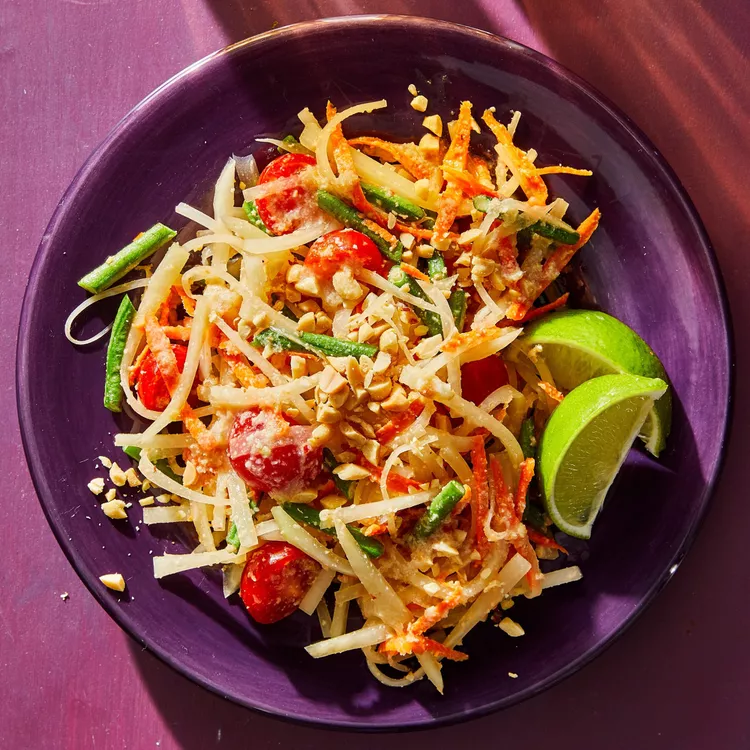

Som Tam

Description
This papaya salad is light and refreshing. I can easily eat a giant
bowl of it and be completely satisfied. And as an extra bonus, this
salad is pretty healthy. I sometimes add extra chiles because I
enjoy a lot of heat.
That's what is great about this recipe, it is easily customized to
suit individual tastes.
Ingredient
- Peanuts
- Thai chiles
- Garlic
- Shrimp
- White sugar
- Limes
- Fish sauce
- Papaya
- Tomatoes
- Green beans
- Carrot
- Black pepper
- Salt
Steps
-
Preheat the oven to 350 degrees F (175 degrees C). Place peanuts
on a baking sheet.
-
Toast in the preheated oven until fragrant and browned, 7 to 8
minutes. Let cool for 5 minutes.
-
Grind roasted peanuts, Thai chilies, garlic, dried shrimp, and
sugar in a mortar and pestle or food processor. Stir in lime
juice and fish sauce to make dressing.
-
Toss papaya, tomatoes, green beans, and carrot with dressing.
Season with salt and pepper.